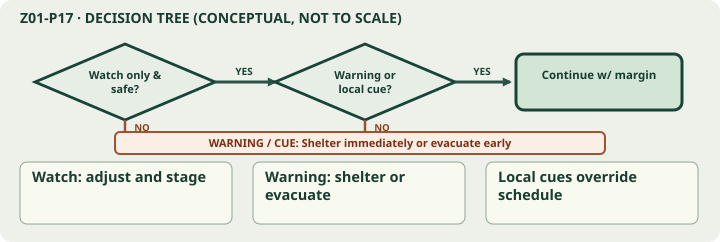

Z01-P17 · Survival fundamentals · New manuscript
Act on weather watches, warnings and abort triggers
Translate forecast alert tiers and field observations into timely stop, shelter or retreat actions.
When it applies · Outdoor travel and household emergency monitoring under changing storm, flood, wind, cold or wildfire conditions.
Equipment · Weather alert receiver, local map showing exits and shelters, watch and written group turnaround limits.

Actions
- Treat a Weather Watch as a trigger to review exits, shorten exposed routes and verify shelter options while conditions are still favorable.[T16, E18, ED]
- Treat a Weather Warning, approaching thunder, rising runoff or rapid visibility loss as an immediate action threshold to seek proper shelter or evacuate.[T16, E07, T13]
- Combine official alerts with on-site red flags—sudden wind shifts, darkening outflow clouds, dropping temperatures or declining group judgment—to abort early.[E18, E06, ED]
Failure recognition · Waiting for rain or debris to strike before leaving a ridge, creek bed or exposed trail, or confusing a Watch with routine weather.[T16, E18, ED]
Verify · The group can state the exact threshold that shifts the plan from continue to shorten, shelter or evacuate.[T16, T13, ED]
Stop or change course · When an active Warning or deteriorating field condition outpaces your return route, stop advancing and commit immediately to the safest reachable refuge.[T16, E07, T13]
Evidence and editorial notes
- E06 · CDC · Preventing Hypothermia (current web edition)
- Section: Recognizing and treating hypothermia · Conditions: Cold wet exposure; signs such as confusion, slurred speech, fumbling or drowsiness
Support: Suspected hypothermia warrants prompt help and protection from further cooling. It can occur above freezing if wet or chilled.
Limitations: Early mild shivering can mask rapidly worsening judgment impairment. · Conflicting evidence: None; aligns with ARC and WMS guidance.
Editorial note: Anchors exposure-to-medical escalation thresholds. · Specialist reviewer: Wilderness medicine
Primary source · checked 2026-11-24 - E07 · NWS · Lightning Tips (current web edition)
- Section: If you hear thunder; when it is safe to return · Conditions: Thunderstorm and reachable substantial building or enclosed hard-topped vehicle
Support: Move to proper shelter at thunder. Wait 30 minutes after last thunder before resuming outdoor activity.
Limitations: Fabric tents, open pavilions, and trees are not lightning-safe shelters. · Conflicting evidence: None; 30-minute rule is standard NWS guidance.
Editorial note: Separates weather cover from lightning protection in Z02. · Specialist reviewer: Weather safety and emergency management
Primary source · checked 2026-11-24 - E18 · NWS · Thunderstorm Safety (current web edition)
- Section: Thunderstorm Safety > Hail, Downbursts, and Flooding · Conditions: Approaching severe thunderstorm with hail, outflow gusts, or heavy rain
Support: Outflow gusts, hail, lightning, and flash runoff can strike before rain arrives at camp; break exposed ridge travel early and secure or vacate lightweight shelters.
Limitations: Storm cells can intensify faster than backcountry foot travel can clear exposed terrain. · Conflicting evidence: None; integrates with E04 and E07.
Editorial note: Connects storm-structure warning cues to early shelter selection. · Specialist reviewer: Weather safety and emergency management
Primary source · checked 2026-11-24 - T13 · FEMA / Ready.gov · Evacuation (current web edition)
- Section: Evacuation > Before, During, and After Evacuation · Conditions: Developing wildfire, flood, storm, or infrastructure emergency
Support: Identify multiple exit routes ahead of time, keep essential go-bags and fuel ready, leave promptly when authorities order evacuation, and do not return until officials declare the area safe.
Limitations: Late departure can trap groups behind road closures, smoke, or rising water. · Conflicting evidence: None; pairs with NWS-FLOOD and READY-WILDFIRE.
Editorial note: Establishes clear leave-early decision thresholds for multi-hazard scenarios. · Specialist reviewer: Emergency management
Primary source · checked 2026-11-24 - T16 · NWS · Flood Safety (current web edition)
- Section: Flood Watches and Warnings; Turn Around Don’t Drown · Conditions: U.S. flood alerts and routes crossing moving or standing floodwater
Support: Use the local flood alert wording and follow directions to move to safer higher ground. Never drive around a barricade or enter a flooded route.
Limitations: Stages, timing and detours depend on event and locality; no observable safe crossing depth. · Conflicting evidence: See A02 claim audit for boundaries.
Editorial note: Clarifies Watch vs Warning decision thresholds in Z01 scenarios. · Specialist reviewer: Emergency management and meteorology
Primary source · checked 2026-11-24
Source lineage · NWS flood, thunderstorm and Ready.gov evacuation guidance; new manuscript · Classification · New manuscript.